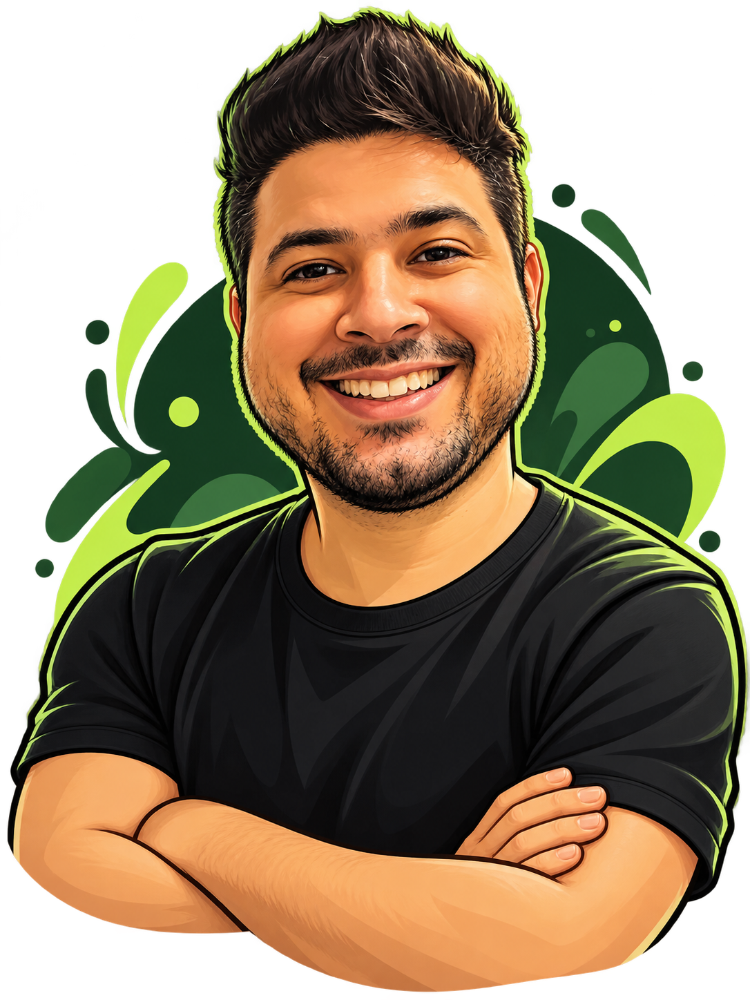

OLÁ, EU SOU O PC ✳
Boas ideias merecem um bom processo.
Criei esta coleção de skills e dicas em português para ajudar seu agente a especificar, construir e entregar software com mais clareza.

✳ Criadas e compartilhadas pelo PC
11 skills para seu fluxo✳ Em português↗ Código aberto no GitHub
ENCONTRE SUA PRÓXIMA SKILL
Uma skill para cada etapa.
Explore as skills criadas pelo PC e encontre o apoio certo para o seu projeto.
Nenhuma skill encontrada. Tente outra busca.
Tudo pronto para começar?
Na raiz do projeto, instale todas as skills ou atualize a coleção instalada.
INSTALAR TODAS AS SKILLS
npx skills add paulocesaaars/skills -a claude-code -a cursor -a github-copilot --copy -yATUALIZAR AS SKILLS
npx skills update -y MATERIAL PARA CONSULTAR
Um guia para acompanhar você.
Conheça mais sobre o uso de skills e tenha o material sempre por perto.